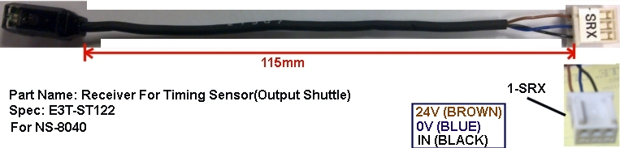

Service History
Subject: NS-8040 Output Shuttle 1 Sensor detection error
Handler Model: NS-8040 (S/N: 181452 , NS-001)
Controller: RC520 (S/N: 03-01091)
Date: 29 Jul 2011 ~ 12 Aug 2011
Symptom
Infineon NS-8040 Output Shuttle 1 Sensor detection error.
Action
29 Jul 2011Found Output Shuttle 1 Timing sensor position out.(Check using HMI; Maintenance->Controller->Maintenance->Out Fiber 1)Adjust output shuttle 1 Timing sensor in X direction.Dry run without device, ok.No dummy devices to verify further.When timing sensor shine through the shuttle's slit with device, the receiver must be unblock(Green).
When double-stack device, shine through slit, timing sensor is Orange&Green.
1 Aug 2011
Output Shuttle 1 Sensor detection error occurred again-Detection sensor height and position adjusted.-Dummy run error still persist, found devices didn't sit in properly so index arm height calibration carried out.-Dummy run about 5 trays carried out without any detection sensor error.
12 Aug 2011
Output Shuttle 1 Sensor detection error occurred again
-Manually move Output Shuttle 1 and check Receiver Timing Sensor condition.-When timing sensor shine through the shuttle's slit Without device, the receiver is unblock(Green), ok-When timing sensor shine through the shuttle's slit With device, the receiver is unblock(Green), ok-Use Maintenance utility, encountered output Shuttle 1 sensor detection error, retry afew times also same error-Check & resit Timing Sensor Receiver connection to Output Shuttle 1 Sensor Board SKP456D.-Re-adjust timing sensor Receiver X & Z height position, NG-Remove Output Shuttle 1 Sensor Board SKP456D, check for any burnt mark. None.-Replace Gate Sensor (Shuttle) board SKP-412-2 from NS-103, NG-Replace Input I/O Module 16bit “SHUTTLE2” from NS-103, NG-Replaced Timing Sensor Receiver from NS-103, problem solved.-Production monitoring
Cause
Timing Sensor Receiver spoilt(for Output Shuttle 1).
Part name: Photoelectric sensor with a built-in amplifier
Part code: R33N800002500
Reference Drawing part number: 8NS22-09

Remarks
For Input Shuttle
R35N800012900 Sensor Board 1 SKP456B (Emitter side)
R35N800018300 Sensor Board 2 SKP456A (Receiver side)
For Output Shuttle
R35N800025600 SKP456D (Sensor Board 3)
R35N800043700 SKP456C (Sensor Board 4)
R35N800025800 SKP456E
SKP456A (Receiver) for Input Shuttle 1 / Input Shuttle 2
SKP456B (Emitter) for Input Shuttle 1 / Input Shuttle 2
SKP456C (located at Output Shuttle 1), SKP456D (between Output Shuttle 1&2 ) and SKP456E (located at Output Shuttle 2)
For NS-8040 Output Timing Sensor(Receiver & Emitter):
R33N800009300 (comes with Receiver, Emitter, molex connectors, molex pins and 3M I/O module connector)
Receiver use molex pins.
Emitter use 3M I/O module connector.
This Emitter only has 2 wires(Brown & Blue) and comes with adjustable amplifier.
Original Emitter on NS-8040 has 3 wires but no amplifier.